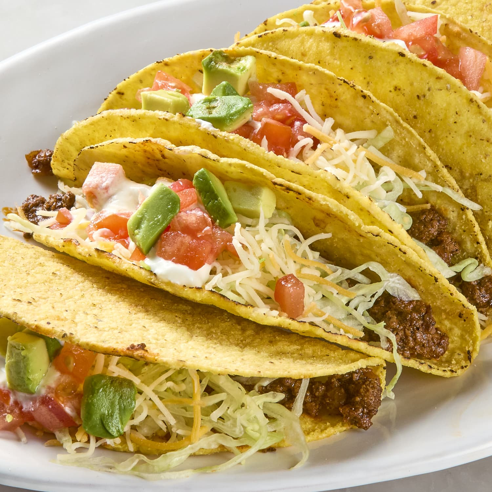

Back Home
Tacos

Description
Get ready to experience life south of the border with this declious dish! These tacos are spicy and satisfying. Tuesday nights just got better!
Ingredients
- Tortilla Shells
- Ground Beef
- Cheese
- Tomatoes
- Lettuce
Steps
- Cook ground beef until finished
- Put beef into tortilla
- Add cheese
- Add tomatoes
- Add lettuce